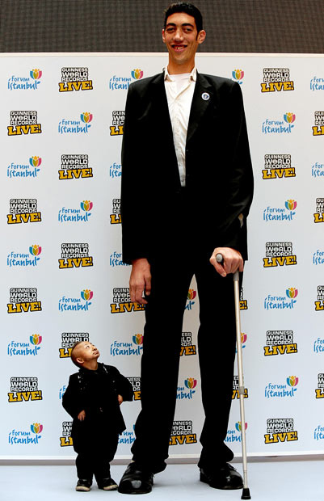
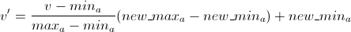
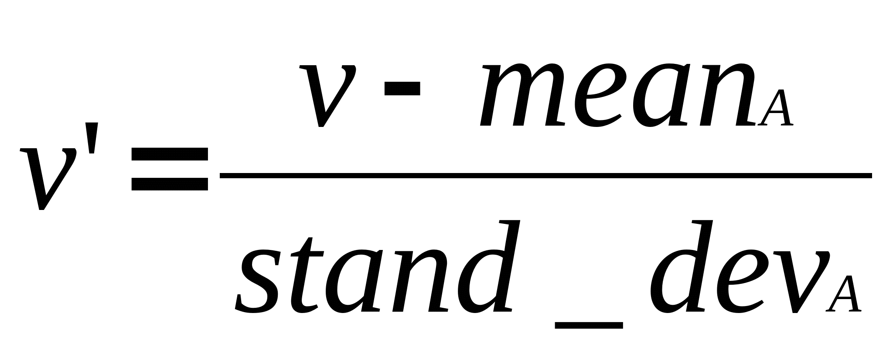
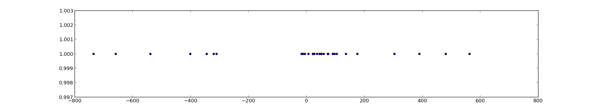
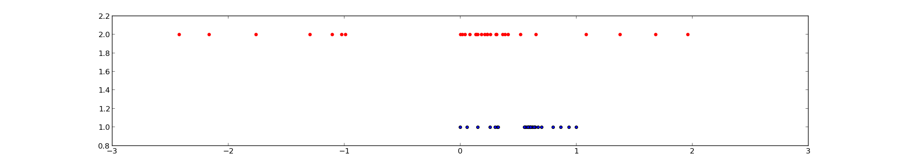
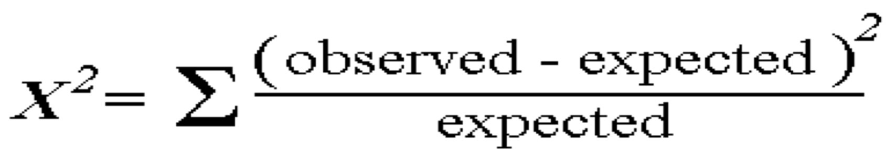
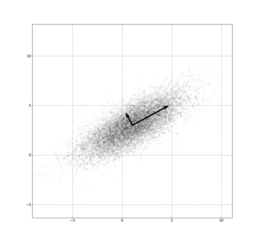

name: inverse layout: true class: left, top, inverse --- # Preprocessing --- ## Real World is Dirty ### Incomplete missing timestamps for actions ### Noisy salary = -10 ### Inconsistent age: 42, birthday: 1997-03-07 ??? ## Types of dirty ### Incomplete lacking some attribute values, containing only aggregate data. e.g., We often regret not including timestamps on different actions like UFCing, instead of tracking total votes (aggregation) ### Noisy Containing errors, like impossible salary data, or decimals in the wrong place ### Inconsistent If two fields depend on each other in a large dataset, you'll find them disagreeing. Errors often come from failures: processes failing halfway into updating --- ## Causes of Problems + Humans + Software + Hardware ??? ## Problems + Berkeley experiment to measure temperature across campus + Turned out average on campus much warmer than external weather services predicted + But sample data looked in line with predictions + Problem: one monitoring station right next to air conditioning unit! + Hardware failure rare, but with large numbers of machines, probable. e.g., RAM can suffer ~1 bit/hour/gigabyte (ECC can help) --- ## Inconsistent Different Sources + Great value in combining data sources + Challenge is merging them together, removing duplicates + Example: Business names ??? ## Business names + Starbucks vs. Starbucks Coffee Shop + Buck's vs Bucks + Trying to use address? Stackbucks vs. Starbucks across the street + Best strategy here is to use DM/ML techniques on the *combination* of features to determine likelihood of match. We'll discuss specific algorithms later in the course --- ## Preprocessing ### Cleaning fill missing values, smooth noisy data, identify or remove outliers, resolve inconsistencies ### Integration merging data from multiple sources ### Reduction obtain a smaller data set that can sufficiently answer important questions ### Transformation change data to a form that is easier to mine or analyze ??? ## Flu Trend Problems (Questions) + We have millisecond search resolution, but will only be plotting on a per day basis + We have the exact text of each query, but just care if it is about the flu or not + Flu Trends, we sometimes see out of control search bots doing 100,000s of searches per day + Mobile phone searches and web searches hit different machines, software, logs + We have IPs in the logs, but will be plotting against geographical areas --- ## Missing Values .left-column[ | Person | Height | |--------|--------| | Bob | 6'0 | | Ashley | - | | Sam | 5'11 | | Alice | 5'9 | | Kate | - | ] .right-column[  ] ??? ## What to do? + (Heights are made up) + We want to get an average class height + Q: What to do with missing rows? + ignore, fill, constant, average, average wrt gender --- ## Fill Missing Values ??? ## Details + Trade-offs + core to engineering --- ## Fill Missing Values + Ignore the record ??? ## Details + Ignore + simply drop from data set. Hope there are not too many to affect answer. Drawbacks? When missing values are all same class (skew data) --- ## Fill Missing Values + Ignore the record + Find value manually ??? ## Details + Find value manually + Even for a small class, might be difficult. Get ruler, measure them. For historical data, impossible. --- ## Fill Missing Values + Ignore the record + Find value manually + Global constant ??? ## Details + Global constant + replace with "N/A" or "6 foot". Can skew data, or cause data to pop in other analysis (all grouped together) --- ## Fill Missing Values + Ignore the record + Find value manually + Global constant + Average ??? ## Details + Average + Mean or median. Either one has potential problems. --- ## Fill Missing Values + Ignore the record + Find value manually + Global constant + Average + Average with respect to class ??? ## Details + Average with respect to class + gender. Average female/male height to fill in values --- ## Fill Missing Values + Ignore the record + Find value manually + Global constant + Average + Average with respect to class + "Most probable" ??? ## Details + "Most probable" + Think of as another step from avg -> class avg. Now throw in other details: age, family history, shoe size. Then weight depending on how much those factors are correlated. Pretty soon you have a regression or Bayesian model, which will cover later --- ## Normalization + Type of data transformation to make reasoning and comparison easier + Is 6' tall? + Coefficients on attributes in regressions understandable ??? ## Context, Comparison + 6' Might be tall for this class, but not on a basketball team + How to know when a data point is "average" or towards the top of a range? + For our housing model, we wanted to use sq. footage and # of bedrooms. But the sq. footage number is huge compared to bedrooms. If we didn't normalize, a formula for determine house price might seem to indicate that # of bedrooms was way more important --- *Todo: image is transparent and assumes light background* ## Min-max  ??? ## New Range + Typically new range is + [0-1] (thought of as %) + [-1-1] (though of as bad->good --- *Todo: image is transparent and assumes light background* ## Z-score  ??? ## Uses + When you want a relative measure of deviation + When you have a distribution estimate, but are unsure of absolute min-max --- *Todo: image scale* ## Comparison   ??? ## Min-max vs Z-score + Min-max: Known range + Z-score: more expressive range + Min-max: requires knowing min-max + Z-score: can estimate with sampling or informed guess --- ## Removing Noise ### Binning create B bins << N data samples, use aggregate statistic of bin for value ### Regression fit data to a function, use function value ### Outlier analysis find outlying points, understand and/or ignore them ??? ## Monitoring Problem + For the problem encountered in temperature monitoring, which makes the most sense? --- ## Trade-offs ### Binning Simple way to remove outliers, but difficult to pick buckets correctly ### Regression If one metric is a direct function of another, what extra information does the value provide? ### Outlier analysis Manual process of understanding outliers, ignoring them can obscure some analysis (e.g., income disparity) ??? ## Trade-offs again + Remember: this class is exposing you to potential tools, it's up to you to be asking the right questions, selecting the appropriate algorithms, interpreting results --- ## Data integration + Merging two data sources + Problem: uniquely identify a concept in both sources + Find data points that are very "close" to each other, call them the same with some probability + Example: [Yelp Menu Data](http://www.yelp.com/menu/tartine-bakery-san-francisco) ??? ## Yelp Menu Data + Launched menu data in 2012 + Takes data about the restaurant menu, find reviews & pictures referring to the menu item + Joins them together + Many different metrics for "close": remember them? --- ## Other measures of "close" Are ```A``` and ```B``` close? | A | B | |----|-----| | 2 | 60 | | 5 | 150 | | 6 | 180 | | 10 | 300 | | 13 | 390 | ??? ## Correlation + Imagine ```A``` and ```B``` have several different dimensions, maybe things like length, height, width, radius + Are they similar? + On one hand no: clearly different order of magnitude + Another way to think about similarity is correlation + All of ```B``` dimensions are 30x of ```A``` + Maybe just using different units! + If I plotted ```A``` and ```B``` and x,y, what would the result look like? --- * Todo: chi? * ## Χ^2 Correlation Test <img src="img/correlation.png" width=100%/>  ??? ## Motivation + Answer: a straight line + So a correlation coefficient gives a sense of how closely *linearly* related two data sets are + Note, besides positive & negative, the slope does not affect the correlation score, just how well fit the data is + Also note I said linear: patterns may still be exhibited, but they are not linearly related, eg 30x + Details of test are in book, you are expected to understand it + Motivation: how different are the observed values from the expected? + Expected is calculated using probability with the assumptions that the sets are *independent* --- ## Covariance & Correlation + Correlation is "normalized" covariance + Covariance describes the degree to which two data sets track each other in units of the two data sets + Correlations describes the degree of similarity without units ??? ## Use in industry + Χ^2 used most commonly, handy to have an expected [0-1] range + "Correlation does not imply causation" + A->B, B->A, C->A,B, A->B->A..., coincidence --- ## Data Reduction ### Dimensionality remove attributes that are the same or similar to other attributes ### Numerosity represent or aggregate the data, sometimes with precision loss ### Compression generalized techniques to decrease the number of bytes needed to store data ??? ## Deep Dive + We're only going to cover selected topics in these areas. + When reading, make sure to understand the intuition behind the other techniques, but if we don't cover it in lecture, you won't need to calculate it in midterm + Ask questions about the concepts you don't understand! That's what separates this class from a book :) + But still potentially useful for your projects! --- ## Subset Selection + Two many attributes? + *Ignore some* + Tricky part: which to ignore? + height x width = area ??? ## Simple to Sophisticated + Ignore the ones that are not helpful + Ignore an attribute highly correlated with another (cm, in) + Ignore an attribute that can be built from others --- ## Principal Component Analysis + Map data to a location along a few vectors  ??? ## Higher dimensions + Remember, 2 dimensions might not make much sense, but becomes useful in higher number of dimensions + These points described by two attributes, <x,y> + What if we wanted to describe them in just 1 dimension? + Pick some good vectors (in our case 1) + Describe where a point is located using only those vectors --- ## Netflix and PCA + A user may have many preferences: Mission Impossible, Love Actually, Man from Nowhere, ... + Instead of keeping track of every preference, we can summarize + Action, RomCom, Foreign ??? ## Summarize in discovered dimensions + With 3 or more "categories", we can reconstruct the user's likely preferences + Dimensions don't necessarily fit into human notions: probably is not a "foreign" dimension, but a subtle combination of other aspects